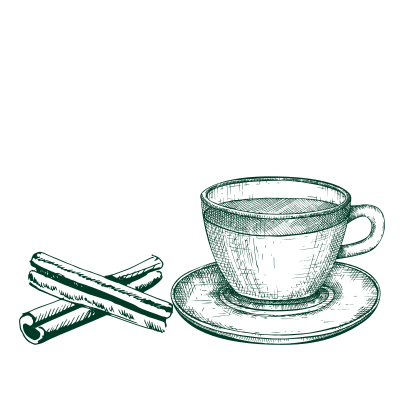
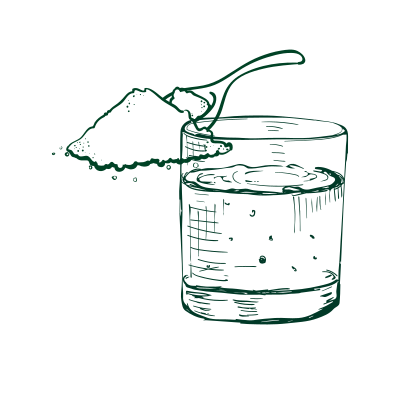

Cold
Explore those cultural home remedies to see how cold can be treated differently.

×
Mexico: Cinnamon Tea/Té de Canela
Cinnamon tea, also called Té de Canela in Mexico, is a conventional homemade drink remedy that relieves cold and sore throat symptoms.
Ingredients:
- Canela sticks
- Water
- Honey
Steps:
- Steep the cinnamon in water.
- Boil the water with cinnamon for 3 to 5 minutes.
- Leave the hot water for 30 minutes
- Sweeten the cinnamon with honey (not necessary)

×

Africa: Lemon Leaves Steam
Lemon Leaves Steam is a practice in African culture that helps ease breathing and clear nasal passage. Lemon leaves are applied as ingredients of this hot steam.
Ingredients:
- Fresh lemon leaves
- Water
Steps:
- Clean the lemon leaves and cut the lemons into chunks.
- Boil the water with lemon leaves and lemons.
- Transfer the leaves to a basin, and mix the boiled water with the leaves.
- Cover yourself with a blanket, and use the basin as a steamer.
×
Eastern Europe: Mouse Rinse
Mouth rinse with salt and soda is a quick remedy in Eastern European households that helps ease a sore throat immediately.
Ingredients:
- Hot Water
- Salt
- Soda
Steps:
- Prepare a glass of hot water
- Add 1 table spoon of salt to the water.
- Add another 2 tablespoons of soda to the water.
- Stir the water and gargle it, and don't drink it; you will feel better soon with your throat in a quick second.
